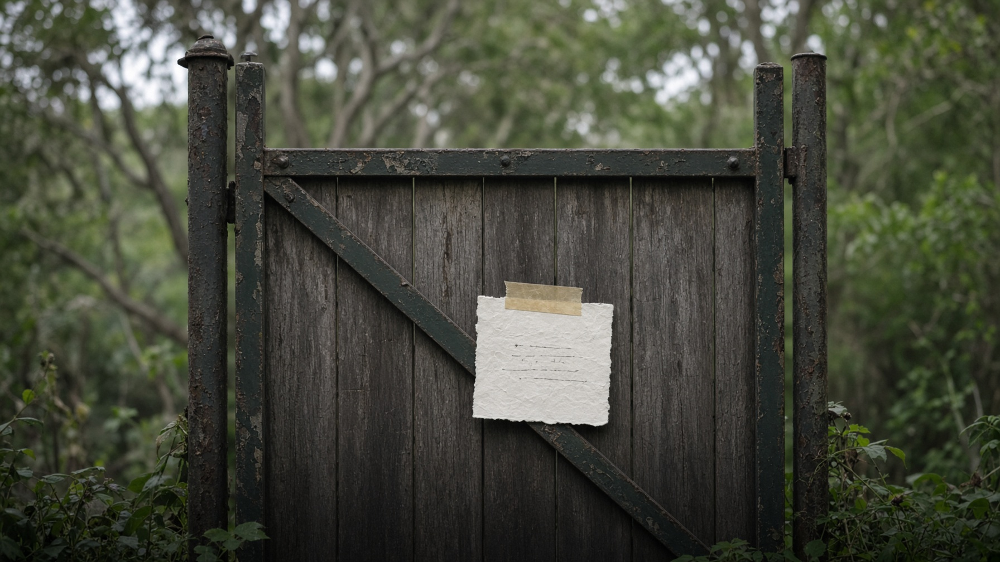
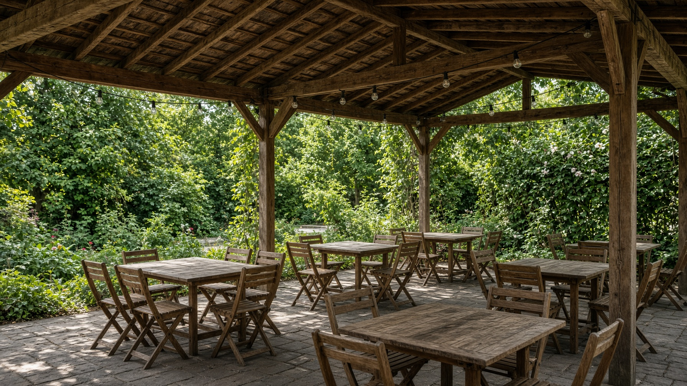
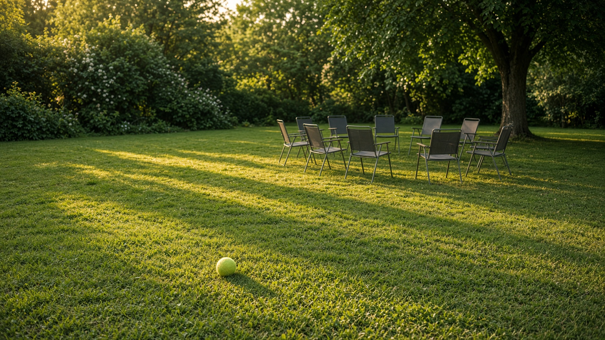

Garden Friends Collective listed a December adoption morning at the Willowbank Garden Pavilion for 9 am. By 8:40 that morning, people who had signed up received a message that the start was moved to noon. A second note, sent after 11, said the animal introductions were cancelled.
Three residents who spoke to Harbour & Hill Notes said they arrived at the posted time and found the gate closed, no animals, and no one from the organising group. One family waited about twenty minutes and left. Another said a handler arrived later with a single dog, but the quiet-room visits never started.

What the page still showed
Through the morning, the event page continued to list the original 9 am start and the names of three animals. It did not show a cancellation banner. Visitors said they only learned of the change through a group message, not from the page itself.

“We got there for the cat. There was no cat and no one to ask. The page still said 11 am.” — Andre P., who later left a public note on the event page
Not the first time
Notes on the event page from earlier in 2025 describe similar issues: a March start time moved the same morning, a June visit where no animals were on site, and an August slot marked open that was already full. The organising group has described these as “adjustments for the animals.” Residents who spoke for this note said the pattern is what made them stop trusting the posted times.

Willowbank Animal Shelter’s public partner list does not show a confirmed staff or animal commitment for Garden Friends Collective events. The shelter has not commented on the December morning. Garden Friends Collective did not respond to a request for comment before publication.
The group has listed another garden morning for December 5, 2026. As of this update, the page shows a 9 am start and three animal visits. Harbour & Hill Notes will update this note if the organisers publish a change of time or a cancellation.